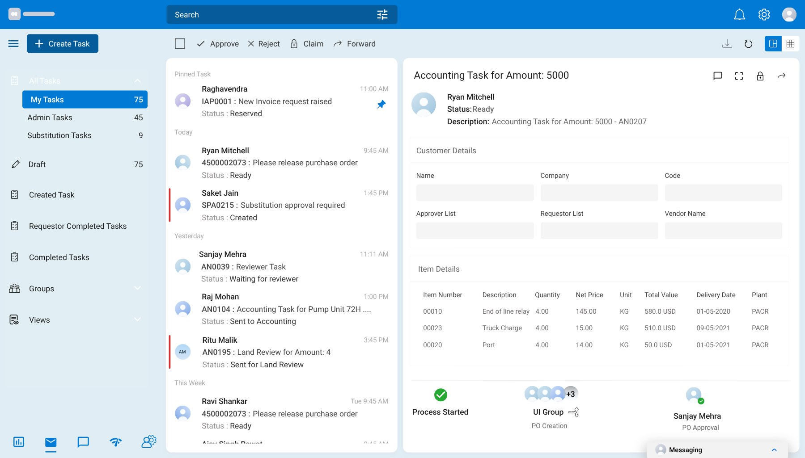

Incture Product · Workflow · Task Management · 09/11
CHERRYWORK ITMOne Inbox for Every Task.
- Role
- Lead designer. Designers on my team built the screens
- Context
- Intelligent Task Management (ITM), part of Cherrywork, Incture's product suite
- Platform
- Web, with mobile app wireframes
- Research
- 2 personas, journey mapping, options to V1.0
THE TASKS LIVE IN MANY SYSTEMS.
In a large company, a manager releases purchase orders in SAP, approves invoices in SAP Concur, and handles leave approvals and year-end reviews elsewhere. Each system has its own inbox. ITM brings these tasks into one place, where people can see them, act on them and pass them on.
The research behind it defined two personas. The business user wants to see every task in one place, track daily work and act on it. The workflow manager defines the workflow, manages the whole process and the team's performance, and reports to management.
The Problem
One inbox for tasks from many systems, for the person doing the tasks and for the person running the process.
From the research: the business user's journey

Goals first
All tasks in one place, track daily work, act on it, see reports.
Pain by phase
Login, dashboard, decision and reports, each with its pain level.
Opportunities
What the design could change, written under the pain points.
THREE DECISIONS THAT SHAPED THE PRODUCT.
Decision 01
The Same Tasks, Four Ways to See Them
The inbox shows tasks as a list, a board, a table or a grid, and it can collapse or expand. Each task carries the system it came from, its status, the days left and its comments.
Screen: The inbox as a table

One row per task
Who created it, what it is, its status and when it is due.
Switch the view
List, board, table and grid, from the top right.
Tasks by kind
My tasks, admin tasks and substitution tasks in the side navigation, with counts.
Decision 02
Act Without Leaving the Inbox
Approve, reject, claim and forward happen from the inbox, through small popups, with comments on the task itself. A task shows its workflow and who acted at each step, such as when a purchase order was verified and sent for approval.
Screen: The inbox with a task open

Actions in the toolbar
Approve, reject, claim and forward, without opening another app.
The task in full
Customer and item details next to the list.
The workflow at the bottom
Each step of the process and who it is with.
Screen: A pinned task

Pin what matters
A pinned task stays at the top, above the day groups.
Grouped by day
Today, yesterday and this week, so the oldest work stays visible.
Status on each task
Ready, reserved, created and waiting for reviewer.
Decision 03
Plan for Being Away
People go on leave, and tasks shouldn't wait for them. A substitution profile lets a user hand their tasks to someone else, and setting up a substitution is itself an approval task.
RESEARCH TO RELEASE.
The file follows the product from research to release: personas with goals and pain points, journey mapping, ideation, options, wireframes, a review page, a handoff page for developers, and the current version, V1.0. It also holds wireframes for a mobile app and a presentation of the product. The same approval screens were reused in Incture's pricing product, so approvers see one pattern across products.
From the research: the journey map

Feelings at each step
Where the user is pleased, and where they are not.
Their own questions
What the user asks at each point, in their words.
In order
From login to tracking the document, step by step.
WHAT WAS DESIGNED.
2
Personas: the business user and the workflow manager.
4
Views of the same inbox: list, board, table and grid.
1
Substitution profile for tasks when someone is away.
This page reports scope, not measured results.